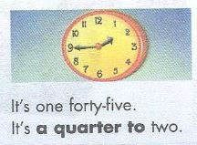

It's really cold. အရမ္းေအးတယ္
Debbie: Hello?
ဟလို...
John: Hi, Debbie. This is John. I'm calling from Australia.
ဟိုင့္..ဒက္ဘီ..ဂၽြန္ပါကြာ။ ငါ ၾသစီက ဖုန္းဆက္ေနတာ
Debbie: Australia?
ၾသစီကလား
John: I'm at a conference in Sydney. Remember?
ငါ ဆစ္ဒနီျမိဳ႕ ေဟာေျပာပြဲတစ္ခုမွာ။ မွတ္မိေသးရဲ႕လား
Debbie: Oh, right. What time is it there?
အိုး..ဟုတ္သားပဲ။ အဲ့မွာ ဘယ္အခ်ိန္ ရွိျပီတုန္း
John: It's 10:00 p.m. And it's four o'clock there in Los Angeles. Right?
ညဆယ္နာရီ ရွိျပီ။ ေလာ့အိမ္ဂ်လစ္မွာ ၄နာရီရွိျပီေနာ္..ဟုတ္လား
Debbie: Yes-four o'clock in the morning!
အင္း - ဟုတ္တယ္...မနက္ ၄ နာရီေလ
John: 4:00 a.m.? oh, I'm really sorry.
နံနက္ေလးနာရီလား။..အိုး...ေဆာ္ရီးပါကြာ
Debbie: That's OK. I'm awake....now.
ရပါတယ္ကြာ။ ငါအခု ႏိုးေနပါျပီ
အခ်ိန္ ေျပာပံုေလးေတြ
တစ္နာရီ ထိုးျပီ
တစ္နာရီနဲ႕ ငါးမိနစ္
တစ္နာရီ ၁၅ မိနစ္
တစ္နာရီခြဲ(တစ္နာရီ မိနစ္ ၃၀)
တစ္နာရီ မိနစ္ ၄၀ (သို႕) ၂နာရီထိုးရန္ မိနစ္ ၂၀ အလို။
တစ္နာရီ 45 မိနစ္ (သို႕) ၂နာရီထိုးရန္ ၁၅ မိနစ္အလို။